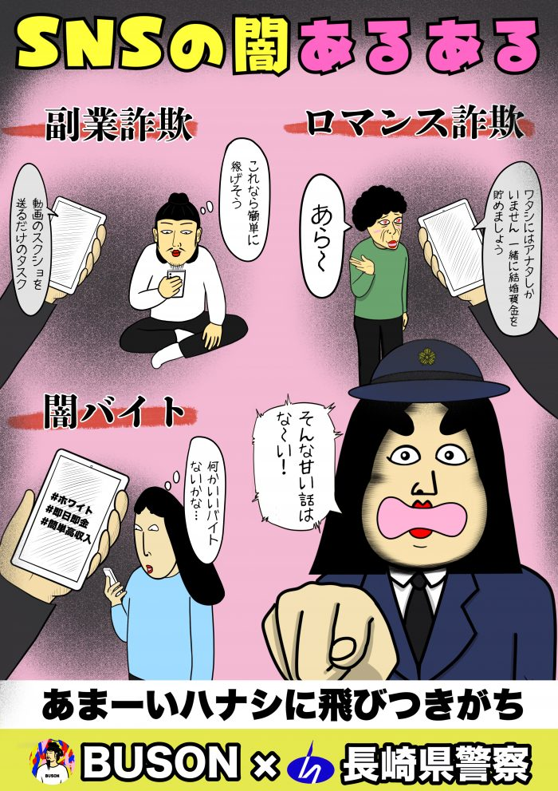

2026年4月、しきぶちゃんが長崎県警察より、令和8年度の「防犯あるある大使」として引き続き委嘱されることが決定しました。
2021年（令和3年）の初代委嘱から数えて6年連続の任命となります。今年度はSNSをきっかけとした犯罪被害が急増している現状を踏まえ、新たな啓発テーマでの広報活動を展開していく予定です。
長崎県警察が、SNSで人気の「あるあるネタ」キャラクター「しきぶちゃん」の親しみやすさを活かし、県民の防犯意識向上を目的として2021年に新設した広報啓発のためのポジションです。
BUSONが長崎県五島市出身であることから、地元に貢献したいという想いと、長崎県警察の「県民にちょっと笑ってもらいながら防犯を伝えたい」という思いが合致してスタートした取り組みです。
| 令和3年度（2021） | 自主防犯あるある〜カギかけ編〜 防犯に強いまちあるある〜ひと声かけんば編〜（ニセ電話詐欺対策） |
|---|---|
| 令和4年度（2022） | 安心なまちあるある〜見守りせんば編〜（地域見守り活動） |
| 令和7年度（2025） | ニセ電話詐欺あるある 万引きあるある SNSの闇あるある（副業詐欺・ロマンス詐欺・闇バイト対策） |
| 令和8年度（2026） | 引き続き委嘱／新たな啓発テーマで広報活動を展開予定 |
「ドアに鍵かけた後何度も確認しがち」「還付金＋ATMで通話中→詐欺！！」「あまーいハナシに飛びつきがち」など、しきぶちゃんならではの "あるある" 視点で、県民のみなさんが日常で犯罪に巻き込まれないためのきっかけを提供します。
制作したポスターは、警察署、商業施設、公共交通機関、デジタルサイネージなど、さまざまな場所で展開されています。
長崎県五島市出身として、地元・長崎の安心な暮らしに少しでも貢献できるこの取り組みを、令和8年度も引き続き担当させていただけることをとても嬉しく思います。
しきぶちゃんの "あるある" を通じて、ひとりでも多くの県民の方に「あ、自分もそうかも」と気づいてもらい、犯罪被害を防ぐきっかけになればと願っています。